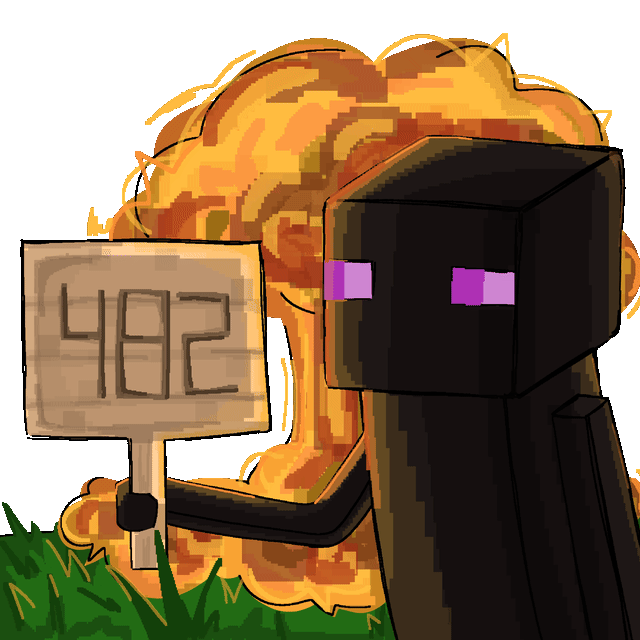

87CRAFT
Ванильное выживание с валютой, аукционом и голосовым чатом. Строим города, делим землю через суд и устраиваем ивенты — без читов и грифа.
Сервер онлайн

Как устроен вход
Спавн — сразу
Заходи по IP хоть сейчас: спавн открыт всем. Осмотрись, познакомься, позови друзей.
Заявка — минута
Ник, как к тебе обращаться, возраст. После отправки получишь личный код заявки.
Основной мир
Модеры одобряют заявку — и основной мир открыт. Статус смотри по коду во вкладке «Статус заявки».
Что внутри
Ванилла + валюта
Обычный Minecraft без лишних механик, но со своей экономикой: штрафы, например, платятся в казну сервера.
Аукцион
Продавай и покупай у других игроков.
Голосовой чат
Plasmo Voice — говоришь с теми, кто рядом. По желанию: без мода тоже можно играть. Как поставить →
Приват до 500×500
Отмечаешь территорию табличкой со своим ником. Споры о земле решает суд.
Города, РП и суды
Ролевые ивенты согласуются с игроками, судью выбирают голосованием.
Без читов и грифа
Читы — бан сразу. Гриф и воровство — штраф и возврат вещей. Правила →
Частые вопросы
Нужна лицензия?
Нет. Подойдёт любой лаунчер — официальный или пиратский. Главное — версия Java Edition 1.21.11.
Пишет «You do not have permissions» или не пускает в основной мир
Значит, заявку ещё смотрят. Спавн при этом работает — играй, прогресс не пропадёт. Проверить статус можно во вкладке «Статус заявки».
Что за /register и /login?
Это пароль от твоего ника на сервере. При первом входе напиши /register пароль пароль, дальше при каждом входе — /login пароль. Не бери пароль от почты или других игр.
Обязателен ли Discord?
Нет. Заявка, статус, правила и гайды — всё здесь, на сайте. В Discord новости, ивенты и помощь от модеров. Он открывается только с VPN.
Не могу подключиться
Проверь версию — нужна ровно 1.21.11. Адрес — 87craft.ru, без порта. Не помогло — загляни в гайды или напиши в Discord в канал «помощь»: ник, лаунчер и скриншот ошибки.
Готов?
Подай заявку — и пока её смотрят, заходи на спавн: 87craft.ru
Как зайти
От запуска игры до основного мира. Моды не нужны — сервер работает на чистой версии.
Запусти Minecraft Java 1.21.11
В лаунчере выбери версию 1.21.11. Ник, под которым играешь, запомни — он нужен в заявке.
Добавь сервер
«Сетевая игра» → «Добавить сервер» → в поле адреса вставь IP → «Готово».
IP 87craft.ruПридумай пароль
При первом входе напиши в чат
/register пароль пароль(два раза одно и то же). Дальше при каждом входе —/login пароль. Пароль защищает твой ник — не бери пароль от почты или других игр.Осваивайся на спавне
Спавн открыт всем сразу — бегай, знакомься, зови друзей. Прогресс никуда не денется.
Подай заявку
Ник в заявке — точно как в игре. После одобрения откроется основной мир. Статус — по коду во вкладке «Статус заявки».
Голосовой чат по желанию
Хочешь слышать других — поставь Fabric и мод Plasmo Voice. Это пять минут, инструкция во вкладке «Моды».
Discord по желанию
Новости, ивенты, помощь модеров. Ник в Discord лучше поставить как в Minecraft: название сервера слева сверху → «Редактировать личный профиль сервера» → «Никнейм». Discord открывается только с VPN.
Заявка
Минута и четыре поля. После отправки получишь личный код — по нему проверишь, одобрили ли заявку.
Заявка отправлена
Модеры посмотрят её и откроют тебе основной мир.
- Заходи на спавн: 87craft.ru, Java 1.21.11.
- При первом входе —
/register пароль пароль. - Проверяй статус во вкладке «Статус заявки».
Статус заявки
Введи код, который получил после отправки. Решение и комментарий видишь только ты — по коду, без него чужую заявку не открыть.
Моды
Что поставить, чтобы играть было удобнее, и чего ставить нельзя.
Сервер — ванилла. Заходи с чистой 1.21.11 из любого лаунчера. Моды ниже — по желанию.
Голосовой чат
Fabric Loader
Основа для модов. Выбери версию игры 1.21.11 и нажми Install. В TLauncher и похожих лаунчерах установщик обычно не нужен — просто выбери в списке версию «Fabric 1.21.11».
fabricmc.netFabric API
Библиотека, без которой не запустится большинство модов, включая голосовой чат. Бери файл для 1.21.11.
ModrinthPlasmo Voice
Сам голосовой чат: слышишь тех, кто рядом в игре. Бери версию для Fabric 1.21.11.
ModrinthКак поставить
Поставь Fabric для 1.21.11
Через установщик с fabricmc.net или выбери «Fabric 1.21.11» в своём лаунчере.
Скачай Fabric API и Plasmo Voice
Оба файла — .jar, оба для Fabric 1.21.11. Не распаковывай их.
Положи их в папку mods
Windows: нажми Win+R, вставь
%appdata%\.minecraft\modsи Enter. Нет папки mods — создай. Если лаунчер хранит игру в другом месте, у него в настройках есть кнопка «Открыть папку игры».Запусти версию Fabric 1.21.11
Именно её, а не обычную 1.21.11 — иначе моды не загрузятся.
Настрой микрофон
В игре нажми V — откроется меню голосового чата: там выбор микрофона, громкость и режим активации.
По желанию
Sodium
Заметно поднимает FPS на слабых ноутбуках. Ставится так же: Fabric + файл в папку mods.
ModrinthНельзя
- X-ray — и моды, и ресурспаки, которые показывают руды сквозь блоки.
- Чит-клиенты и любые моды на преимущество: киллаура, флай, автокликер и подобное.
- Всё, что помогает дюпать или ломать чужие приваты.
За это — бан сразу. Сомневаешься в моде — спроси у модеров в Discord, пока не поставил.
Гайды
Короткие ответы на то, с чем сталкиваются в первые дни.
Первый вход: пароль и спавн
Сервер спросит пароль. В первый раз: /register пароль пароль. Потом при каждом входе: /login пароль.
Ты появишься на спавне — это безопасная общая зона. Основной мир откроется, когда одобрят заявку.
Забыл пароль от /login
Сам сбросить его не получится — напиши модерам в Discord: канал «помощь», метка «Вопрос». Укажи ник в Minecraft.
Как заприватить территорию
- Максимум — 500×500 блоков.
- Территорию обозначает табличка с ником владельца. Поставь её так, чтобы было видно.
- Ломать, открывать сундуки и пользоваться механизмами на чужом привате без разрешения нельзя — это гриф.
- Любые споры о земле решает суд.
Штрафы и казна
За гриф, воровство и убийство вне согласованного РП назначают штраф в казну сервера — и возврат вещей пострадавшему. Оскорбил админа — тоже штраф.
Не оплатил штраф — бан.
Города, РП и суды
- РП (ролевая игра) на сервере есть, но его согласовывают: на весь сервер — с админами, в городе — с владельцами города, на чужой территории — с её владельцами.
- РП не должно мешать играть другим. Крупные РП-ивенты — только с админами.
- Суды проводятся по мере необходимости. Судью выбирают голосованием игроков.
Голосовой чат
Fabric 1.21.11 + моды Fabric API и Plasmo Voice в папке mods. Пошагово — во вкладке «Моды». В игре меню голоса открывается на V.
Правила общения в голосовом те же, что и в чате.
Нашёл баг или дюп
Сразу скажи модерам (Discord, канал «помощь»). Молча пользоваться — бан. Дюп — это клонирование предметов через баги сервера или стороннее ПО, он запрещён в любом виде.
Не могу подключиться
- Версия — ровно 1.21.11 (или Fabric 1.21.11, если ставил моды).
- Адрес —
87craft.ru, без порта и пробелов. - Перезапусти игру и попробуй ещё раз через минуту.
- Не помогло — Discord, канал «помощь», метка «Не пускает»: ник, лаунчер, скриншот ошибки.
Зачем ник в Discord как в Minecraft
По нему модеры находят тебя по заявке и в спорных ситуациях. Меняется так: название сервера слева сверху → «Редактировать личный профиль сервера» → «Никнейм».
Правила
Сначала главное, ниже — подробно по разделам. Спорные случаи решают модеры, и администрация может применять меры по своему усмотрению.
- Ник в Discord = ник в Minecraft.
- Читы, X-ray, автокликер и моды на преимущество бан сразу
- Травля, оскорбления, слив чужих личных данных бан
- Гриф, воровство, убийство вне согласованного РП штраф + возврат
- Приват — до 500×500 блоков, табличкой со своим ником. Споры — в суде.
- Нашёл баг или дюп — скажи модерам. Молча пользуешься бан
- Без спама, рекламы, политики и 18+.
Подробно
1 · Читы
Читы и любые программы или моды, которые дают преимущество, — бан сразу, без предупреждений.
2 · Общение
- Систематические оскорбления по национальному, половому, религиозному признаку, буллинг — бан.
- Докс и слив личных данных — бан без возможности разбана.
- Сервер — не место для политических споров.
- Оскорбление админов — штраф в казну сервера.
- Спам, флуд, реклама других серверов и ресурсов — запрещены.
- Правила текстового чата действуют и в голосовом.
3 · Гриферство
- Уничтожение построек, чужих вещей, городской собственности и приватов — штраф. Не оплатил — бан.
- Убийство игроков вне согласованного РП — штраф и возврат вещей.
- Воровство — штраф и возврат вещей.
4 · Территории
- Заприватить можно до 500×500 блоков.
- Территория обозначается табличкой с ником владельца.
- Любые территориальные вопросы решаются в суде.
5 · РП и суды
- РП на весь сервер согласуется с админами, в городе — с владельцами города, на чужой территории — с её владельцами.
- РП не должно вредить игре других. Крупные РП-ивенты — только с админами.
- Суды проводятся по мере необходимости, судью выбирают голосованием игроков.
6 · Запрещено в любом виде
- Экстремизм, эротика и 18+, дискриминация, подстрекательство к суициду.
- Угрозы расправой и вред в реальной жизни.
- Чужие персональные данные и контент с другими игроками без их согласия.
- Пропаганда наркотиков.
- Продажа игровых вещей за реальные деньги.
- Твинки — дополнительные аккаунты, чтобы обойти бан или ограничения.
- Запрещённые слова на стримах с сервера.
- Поиск лазеек в правилах.
7 · Прочее
- С администрацией — через поддержку и Discord.
- Администрация не отвечает за контент третьих лиц.
Словарик
- Вайп
- Полная очистка карты и прогресса всех игроков — ради обновления мира и экономики.
- Гриф
- Намеренное разрушение чужих построек, убийство мирных животных, вред чужому имуществу.
- Дюп
- Клонирование предметов через баги сервера или стороннее ПО. Строго запрещено.
- Приват
- Защищённая территория игрока: без разрешения нельзя ломать блоки, открывать сундуки и трогать механизмы.
- Спавн
- Место появления новых игроков. Безопасная общая зона.
- Кик
- Принудительное отключение от сервера.
- Мут
- Запрет писать в чат на время.
- Бан
- Блокировка доступа к серверу на время или навсегда.
Полная версия — в Discord, канал «правила». Если здесь и там что-то расходится, действует версия в Discord.